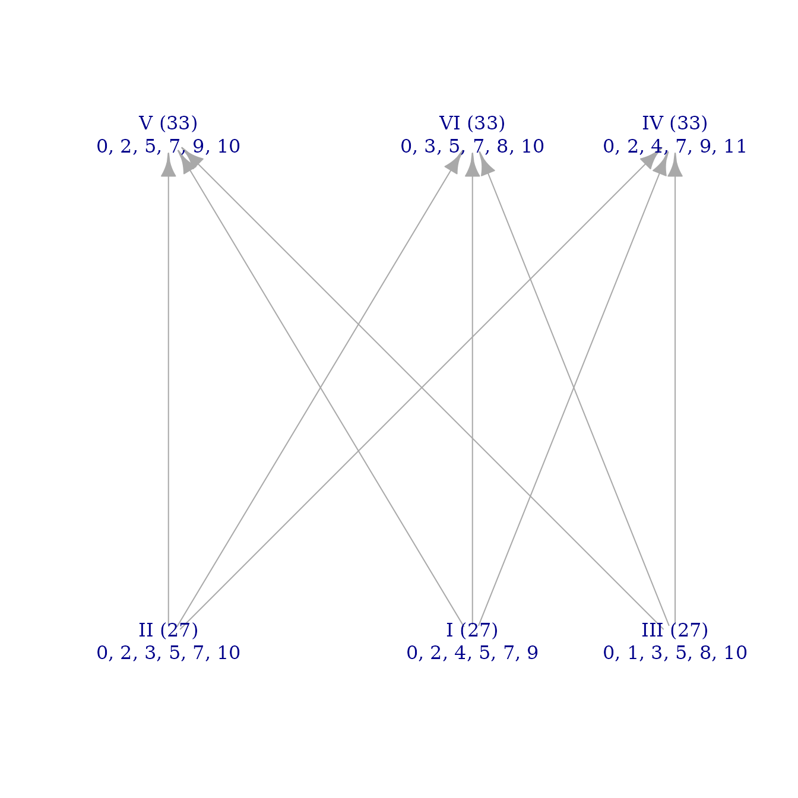

This vignette is meant to be an entry point to musicMCT for readers of the article “Dark notes, bright scales, and Debussy’s La fille aux cheveux de lin.” It explains the tools in the package that are useful in applying the ideas of the article, and it recreates some of the specific calculations there.
Main Concepts
Throughout the article and this vignette, the familiar major scale will be a useful test case:
c_maj <- c(0, 2, 4, 5, 7, 9, 11)Note R’s way of entering an ordered tuple, c(), which is
always necessary when manually defining a musical set.
Another important scale is the perfectly even division of the octave,
represented in the article as \(\mathcal{E}_n\). This can be found using
the function edoo():
augmented_triad <- edoo(3)
diminished_seventh <- edoo(4)
equiheptatonic <- edoo(7)
augmented_triad
#> [1] 0 4 8
diminished_seventh
#> [1] 0 3 6 9
equiheptatonic
#> [1] 0.000000 1.714286 3.428571 5.142857 6.857143 8.571429 10.285714The main concept of the article is the function \(\Phi_n\), which calculates the brightness
of all a scale’s notes. This function is implemented in musicMCT by
phi(). Simply enter the scale you want to calculate between
the parentheses of phi(). (The parameter \(n\) of \(\Phi_n\) doesn’t need to be specified,
since it’s obvious from the number of notes in your scale.)
Compare the following code block to the article’s Example 2.4:
phi(c(0, 4, 7))
#> [1] 0 0 -1
phi(c(2, 6, 9))
#> [1] 2 2 1
phi(c_maj)
#> [1] 0.0000000 0.2857143 0.5714286 -0.1428571 0.1428571 0.4285714 0.7142857\(\Phi_n\) also goes by another name
in musicMCT, coord_to_edo(), which emphasizes the
function’s sense as a change of coordinate system. Its inverse, going
from a list of brightness values to a musical scale (i.e., a tuple in
cpitch\(^n\)), is
coord_from_edo().
We can find the darkest note of a scale by a built-in R command:
This tells us that \(\hat{4}\), the
subdominant, is the darkest note of the major scale. Like conventional
music theory, R is a 1-indexed language, so it considers \(\hat{1}\) to be the tonic and \(\hat{4}\) to be the subdominant. (In the
article, which uses 0-indexing, the subdominant is \(\hat{3}\) and the minimal brightness value
is \(\varphi_3\).) Also, be aware that
R’s which.min() function returns only the first
minimum value, which may obscure the existence of brightness ties:
minor_seventh <- c(0, 3, 7, 10)
phi(minor_seventh)
#> [1] 0 0 1 1
which.min(phi(minor_seventh))
#> [1] 1Finally, the sum brightness \(\beta\) of a scale can be found with the
function sum_brightness(). By default, this gives the
brightness of the mode you entered, but the mode parameter
can specify a different mode (0-indexed, following Definition 3.1). We
can test this following the examples in Section 3.
Example 3.8:
major_triad <- c(0, 4, 7)
sum_brightness(major_triad)
#> [1] 11
sum_brightness(major_triad, mode=1) # first inversion
#> [1] 11
sum_brightness(major_triad, mode=2) # second inversion
#> [1] 14Example 3.9:
sum_brightness(c_maj)
#> [1] 38
sum_brightness(c_maj, mode=3) # lydian
#> [1] 39
sum_brightness(c_maj, mode=5) # aeolian
#> [1] 35Example 3.10:
H <- c(0, 1, 3, 4, 6, 7, 8, 10)
phi(H)
#> [1] 0.0 -0.5 0.0 -0.5 0.0 -0.5 -1.0 -0.5
sum_brightness(H)
#> [1] 39
sum_brightness(H, mode=6)
#> [1] 47
subset_varieties(c(0, 2, 4, 6), H, unique=FALSE)
#> [,1] [,2] [,3] [,4] [,5] [,6] [,7] [,8]
#> [1,] 0 0 0 0 0 0 0 0
#> [2,] 3 3 3 3 2 3 4 3
#> [3,] 6 6 5 6 6 6 7 6
#> [4,] 8 9 9 9 9 9 10 9The last command of the code block above calculates all the seventh chords that are embedded in \(H\) as a stack of thirds. These are represented as columns: the first column shows the quality of seventh chord built on the first step of \(H\), \((0, 3, 6, 8)\); the second column shows the chord quality on the next step of the scale, \((0, 3, 6, 9)\); and so on. Note how the dominant seventh chord \((0, 4, 7, 10)\) only occurs once, over the scale’s penultimate note (\(A\flat\)).
A useful tool for visualizing scalar brightness is the brightness graph. This visual representation isn’t discussed in “Dark notes,” but it is introduced on pp. 7–11 of “Modal Color Theory”. In a brightness graph, the vertical positioning of a mode corresponds to its sum brightness. Thus, brightness ties can be seen from a brightness graph when multiple nodes in the graph are on a horizontal line. This lets us visualize the many brightness ties of Example 3.11, for instance:
brightnessgraph(c(0, 2, 4, 5, 7, 9))
So far, all of our examples have been in twelve-tone equal
temperament. Scales in other tunings are equally easy to study, though,
and musicMCT offers quick access to the 5-limit just diatonic scale of
Example 3.16 by the command j(dia).
phi(j(dia))
#> [1] 0.0000000 0.3248143 0.4345657 -0.1624072 0.1624072 0.2721586 0.5969729
alpha <- function(heptachord) heptachord - c_maj
del <- c(-2, 0, 2, -3, -1, 1, 3)
spc_numbers <- function(heptachord) 7*alpha(heptachord) + del
round(spc_numbers(j(dia)), 2)
#> [1] -2.00 0.27 1.04 -3.14 -0.86 -0.09 2.18Hyperplane Arrangements
Section 3.3 discusses how note brightness (and sum brightness) can be
characterized in terms of hyperplane arrangements, like I do for
voice-leading brightness in “Modal Color Theory.” In musicMCT, the
“braid” arrangement \(\mathcal{B}_n\)
that describes note brightness is called the “white” hyperplane
arrangement. The augmented matrix defining the hyperplanes themselves
can be created with make_white_ineqmat():
make_white_ineqmat(3)
#> [,1] [,2] [,3] [,4]
#> [1,] -3.0 3 0.0 -1
#> [2,] -1.5 0 1.5 -1
#> [3,] 0.0 -3 3.0 -1However, we often want to work with more human-readable functions
like signvector() and howfree(). In this case,
you can specify that musicMCT should use the white arrangement (rather
than the MCT arrangement) with the ineqmat parameter of
many functions.
For instance, consider the trichords described in the last paragraph of Section 3.3. Their similarities and differences, reckoned against two different hyperplane arrangements, can be seen here:
A <- c(0, 2, 5)
B <- c(0, 1, 6)
B_prime <- c(0, 1, 7)
phi(A)
#> [1] 0 -2 -3
phi(B)
#> [1] 0 -3 -2
phi(B_prime)
#> [1] 0 -3 -1
signvector(A, ineqmat="white")
#> [1] -1 -1 -1
signvector(B, ineqmat="white")
#> [1] -1 -1 1
signvector(B_prime, ineqmat="white")
#> [1] -1 -1 1
signvector(A) # equivalent to signvector(A, ineqmat="mct")
#> [1] -1 -1 -1
signvector(B)
#> [1] -1 -1 -1
signvector(B_prime)
#> [1] -1 -1 1Debussy’s La fille aux cheveux de lin
The package musicMCT is designed to compute properties of scales, not to automate the process of music analysis. There is therefore relatively little from the final section of the paper that can be recreated in this vignette. The main thing that can be reproduced here is the information in Table 1:
trichord_M <- c(0, 4, 7)
tetrachord_I <- c(0, 4, 7, 9)
pentachord_P <- c(0, 2, 4, 7, 9)
pentachord_P_prime <- c(0, 2, 5, 7, 9)
hexachord_G <- c(0, 2, 4, 5, 7, 9)
heptachord_D <- c(0, 2, 4, 5, 7, 9, 11)
phi(trichord_M)
#> [1] 0 0 -1
phi(tetrachord_I)
#> [1] 0 1 1 0
phi(pentachord_P)
#> [1] 0.0 -0.4 -0.8 -0.2 -0.6
phi(pentachord_P_prime)
#> [1] 0.0 -0.4 0.2 -0.2 -0.6
phi(hexachord_G)
#> [1] 0 0 0 -1 -1 -1
phi(heptachord_D)
#> [1] 0.0000000 0.2857143 0.5714286 -0.1428571 0.1428571 0.4285714 0.7142857Last updated: 6 October 2026